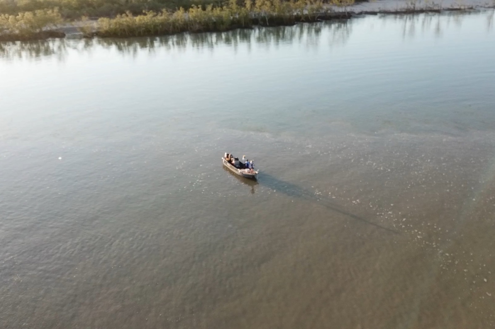
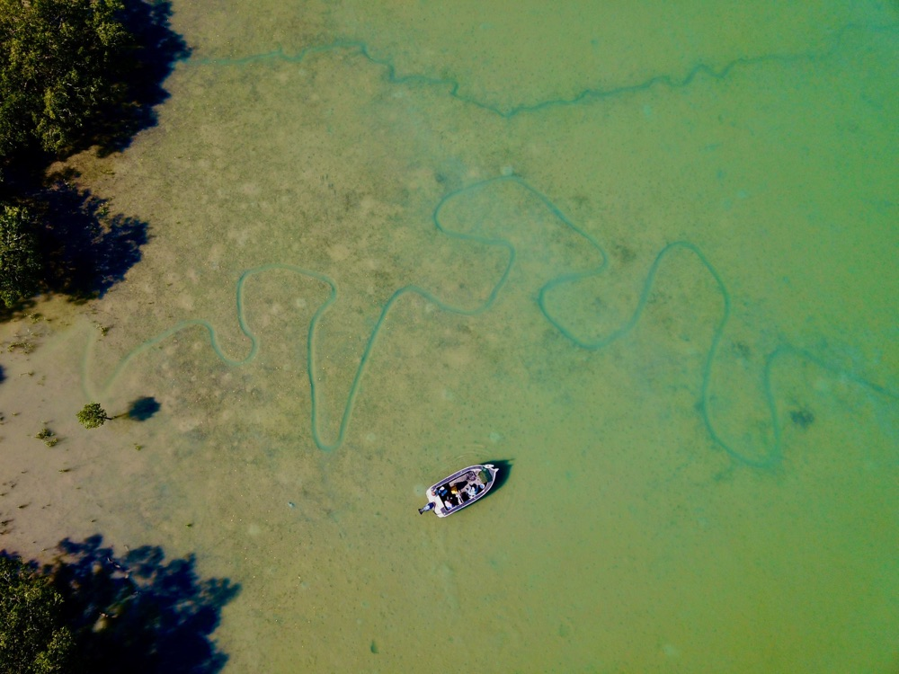

Bag a Barra, Oz Off Road Radio · 3AW / Nine Radio
Friday 30 October 2026

Listen · 11 min
Originally broadcast on 3AW / Nine Radio. Listen on the Bag a Barra, Oz Off Road Radio.
It's time to head to the Top End and Bag a Barra with Glenn Watty Watt. Thanks to Barefoot Fishing Safaris and Uniden, for the best in UHF radio communications. Explore the extract series at uniden.com.au. Well, we're literally hitting the water because we are told that at the moment, this bloke is catching queenies.
I have no idea what a queen he is, and he's sitting there waiting for the tide to come out, because he will go out, so he can go and get some barramundi. Watty, is that right? What's a queenie, son? Yeah, that's right.
Queenfish is one of our sort of, um, probably favourite. I suppose, pelagic fish that we get up here, come up into Bynoe Harbour and the high tide, mate. And so, um, yeah, it's a really great way to pass the time while we're waiting for Barra clock to happen and we're racking a few open kids. The boys are going to have to look after themselves now, though.
Listen, listen, you know how, like, we actually, I think we might have mentioned it last week, the time when you had the dog wedding up there in the territory and 1000s turned up there to enjoy the celebrations, as we know. And obviously, you know, there was a heap of kegs put on as usual up there. But mate, is there any chance of getting a kingfish and a queenfish in a tank and having another wedding? Oh, a fish tank.
Well, unfortunately, they live at opposite ends of the country. I don't know if there's anywhere where their habitats would actually cross over, but Hang on, hang on. Long, long, long distance relationship. There you go.
Well, I mean, it can be done. Do it on Zoom. Everything's done on Zoom, isn't it, these days? and what do they call it? Microsoft meetings.
Do you know what that is? Yeah, I was on a teams meeting last night, actually. Teams meeting. That's it.
I've heard of that one too. I'm A plus, mate. In the end, I'd say, mate. ring me.
I had no idea. listen, before we get into it. We found, I found out something, I was, you know, like Mulchi, our man, Mulchi, who, you know, he presses the buttons on this show. And Mulchi, as we know, last the other week, was singing the Hawaii 5-0 tune, every outbreak and all this stuff. Well, he's discussing as we prepare for this program.
He's going to Oberon to perform. He's in a band. He plays the bass guitar. I mean, like, what Mulch are you there, son? Yeah. Hey.
Mulchi. I mean, this is a revelation. I mean you've worked with me now for quite some time. Yeah. And I had no ideas.
are you any good? No, I think I'm pretty good. I'd like to think that I'm at least partial, 1st of all. What we want you to do next week is bring the bass guitar in.
What do you think, Watty, and we get him to we get him to play a few chords. You could play my intro song on the guitar. That'd be good. No, no, not your intro song.
It's AI. I mean, you're not doing we're not doing that. Imagine AI standing up on stage. performing a song.
I mean, it's, you can't beat the original. I'm not a fan of all that. I'm not a fan of all that. Meanwhile, you know, we try to look after artists here and I think, AI just pinches bits off all of them.
It's just unbelievable. But anyway. But no, I think Mulchi, I think he should bring the guitar in and do a few chords. In fact, I'll raise it with Vic Woodman next hour on the show as well.
I just think that this is a revelation. And I've got, mate, I've got a drum kit here. You can sing, can't you, Watty? Yeah, I can sing. Start a real band here.
You probably can't afford me, though, duck. pretty expensive. Listen, even I can afford a 6 pack of great northerns, okay? I mean, you're kidding, aren't you?
So anyway, so what else are you sitting there? You on the water. Let's get back to fishing because that's where you are and that's what we're supposed to be talking about. So you're actually on the boat now.
Bynoe Harbour, yeah? that what you said you were? Yeah, that's right. Yeah, we're on the last day of 5 days for these fellas and we've we've had a bit of weather and some, we've got fishing on these really big tide.
So we've got about 7 metres of runout tide happening today. vertical fall in the water. So, um, we had a little bit more than that yesterday and uh, barra really went off. We ended up getting 51 Barramundi into the net yesterday and probably lost, almost past that again.
So if we if we finish off the last day of the trip with anything similar to that today, we'll all be very happy. So that's what happens this time year, mate, the, you know, that warmer water, big tides and a bit of rain around stirs everything up. So that's why we're here. That's unbelievable.
51. Yeah, when I was there. That's right. You keep coming up when it's when it's cold weather, mate.
That's the problem you're too scared. Probably. Mate, you just mentioned that the vertical that tie drops vertically. Just explain that.
Well, I mean, it was a 7.5 high tide today and then it'll be down to, I think it's a.3 or something by about lunchtime. So we got 7 metres of war, leaving this entire harbour, 600 square kilometres. A lot of water to come out and it, that's what gets everything going, particularly the 1st couple of hours of it, um, these queenfish and trevally just love it, brings all the bait out and, and they have a big beat. So, um, that's what we're doing while we wait for the baritime to happen, which is probably another hour or so off that.
It just needs to fall out below the trees a bit more and then we'll be into them. Yeah, that's unbelievable, isn't it? Yeah. and just a quick one because you're a pretty smart bloke.
When the tide goes out, do you know where it goes? Yeah, it goes somewhere else. Yeah, goes somewhere. It might come down here.
eh? I just thought I'd ask you that one. Where does it go? But if you gauge other sort of the world or something.
Actually, I actually do know the answer to that. And it's actually the tide doesn't actually go out. The earth moves away from the water. So the moon and the sun right now, opposite sides of the, of the earth.
So the water bulges out each side. It's more of an egg shape than a round shape and the earth spins within that bulge of water is the actual true answer for that. This is unbelievable. I mean, this is why I ask you the tough questions.
I mean, that's unbelievable. Gigi. I tell you what, there are people sitting now listening to this thinking, mate, how this show has just become so informative. This is a science program now.
I mean, how good is that? Yeah, we just used to talk about beer and barramundi, didn't we? No, that's nothing wrong with that either, mate. Don't worry about that.
But that is... Well there you Well, when I ask a question, you've delivered the answer. I mean, it's probably all a little bit still too much technical stuff for me, but anyway, it sounded pretty good.
I'm in no position to argue with you. So if that's what you're telling me, that's all to do with the earth moving away from the water. Yeah, still doesn't make sense back on the water, doesn't if it leaves the water, wouldn't the water just be going up into the sky or? No, well, gravity holds the water down, mate. Oh, okay. fair enough.
And, you know, all you got to do is say with confidence and most people will believe whatever you're saying. Yeah, that's true, mate. ask all the politicians around the bus. Oh, mate.
You know, when they're not telling the truth, because the ellipse are moving. eh? That's right. Yeah, we don't get into that. Yeah, not all of them, but geez, most of them, especially the current crop that's running their show.
Not a fan, but anyway. Well, listen. And what about just quickly, the $1000000 fish? Anyone a bit more cashed up this week than they were last week?
Any little wins? No, no updates on that. We thought we were a pretty good chance in the last few, our 50-fish day, we were sort of getting our 10s and 15s a day, and yeah, if you sift through enough of them, I suppose you're increasing your chances.
So, um, maybe today's our day, but every, we've been very careful to check them all, that's for sure. There's just a quick one, which I don't think you will answer. I mean, every week you go up in the territory around water, there's crocodiles and Barramundi, is there any idea what the stock levels are of barra? 1000000s, wouldn't it?
I mean, how many? Oh yeah. Yeah, Barramundi's a very healthy population. They're a very fecund fish.
They have huge spawning numbers and good survival rates. So there's no, there's absolutely no threat to Barramundi populations. Apart from, they do get locally depleted when the commercial gill nets go into certain areas, bays, creeks, and rivers and stuff like that, and you'll notice a difference then, but, um, places like buy no hardware, especially after a good wet season last year, they're very abundant fisheries. No problems at all.
All right, mate, and just, and how's the buildup for the wet that's on its way? Yeah, we've started getting rain every day. this week. So, exciting times.
We're probably getting at least 20 or 30 mils in a storm every day out here the last few days and Darwin's been copying it as well. So, the process has started, mate, and it should get better and better from here, and of course, we're not far off November, so, um, that's, that's when we really start to expect some, um, heavier rain fronts to come through rather than just storms. Still got that big inflatable water park in the middle of Darwin or have they packed it up for the summer? No, I think it's still going, mate.
Dead runs all year. quiet, of course, but yeah, that's right. You can go and have a bit of fun there. Yeah, it's a good spot in there, isn't it?
In the middle of Darwin, in that little area there. You got the lagoon, you got the wave pool, which I was big in that. I was in that a few years ago. And I actually went in there to do, I had to, like, where the machine actually that makes the waves stopped working, so they just got me to do a few bombs and just to create some more waves.
I did that for them and don't, you know. I'm a big fan. That little area is fantastic. I'm a big fan of that
It is a great area. They've done really good job there. And, you know, it's only, let's say it was 20 years ago that that was all mangroves and mud, that's all regret land from rock that got carted in from out past Crobery Billabong, mate. Yeah, and I was driving trucks back then, carton the rock.
Is that right? Yeah, so that was just nothing there. Yep, that's right. It was just muddy mangrove blind.
That is unreal, because now it's restaurants and pubs and you got the park and you got that, you know, we realised just kicking back and relaxing. You got the wave pool, you got that beautiful lagoon and Is that real? Unbelievable. I guess that's what happens.
I mean, it was, I guess, you know, when they look what they did, the Darling Arbour in Sydney, and other places where they do these little redevelopments, but I had no idea about that. That's, yeah, certainly, it looks fantastic, and obviously it's a real attraction for people heading to the Top End, you know, any time of the year. All right, mate, we'll let you sit there and what, how long before the tide's out, mate? How long have you got?
Uh, we might go and look for barra in the next half hour or so I can just see the tops of some little bushes coming out. That's a pretty good sign that it's not far off. Oh, good stuff, mate. All right.
Well, go and catch one for me, will you? All right, we'll do that. All right, mate. Well, there he is.
He's a good man. Well, man, Glenn, Watty, what? Barefoot Fishing Safaris. You can catch him on Instagram, of course, Facebook, and, you know, check out his website, and also, he has, um, the other big bummer, he takes you all over the place around the world.
That's right. where he can know, not just fish in the Top End, but fish all over the world in some pretty exotic places, but it is good when he's just up there at home, in there, and that's angling adventures, by the way. But when you just want to fish in the Top End and fish locally and go with an expert who knows all about tides now and as well as queenfish and kingfish, having long distance relationships. Well, you can't beat our man, the best in the business.
Glenn. What do you want? Barefoot Fishing Safaris up there in Darwin. The expert in fishing up in the Top End.